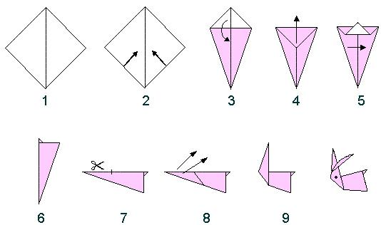

Step 1:Take a square sheet of paper and position it so it looks like a diamond shape. Fold in half and unfold.
Step 2:Fold the bottom left and bottom right edges towards the center crease. It will look like a kite shape.
Step 3:Fold the top of the kite (small triangular flap) downwards.
Step 4:Fold the tip of the kite back up approximately 2/3 of the way. The protruding triangle will be the bunny's tail.
Step 5:Fold the model in half.
Step 6:Rotate clockwise a quarter turn.
Step 7:Cut the top crease a little less than half the length of the paper.
Step 8:Fold the two flaps upwards to make ears.
Step 9:Curl the ears and decorate with eyes.
